The MiSTer Game Boy core running natively on a small Gowin FPGA board, with HDMI output, an Analogue Pocket–style menu and an optional SPI LCD. Every step from source to bitstream uses open-source tools.
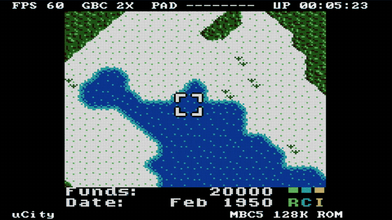
The full GB/GBC system on a 20K-LUT FPGA, with the parts of a handheld you need around it.
GB and GBC modes, double speed, HDMA, audio. MBC1/2/3/5, HuC1/HuC3 and plain-ROM carts.
720×480p at 59.94 Hz, 3× integer scaling, 48 kHz stereo embedded in HDMI. Triple-buffered, so there is no tearing.
Sharp, LCD grid and scanline modes, five DMG palettes and GBC LCD color correction.
Game picker, display settings, Auto/GBC/DMG system mode. The game pauses and dims behind the menu.
ST7735S 128×128 driven together with HDMI at about 60 fps, in Fit (filtered) or Crop (1:1) mode.
DualShock 2, eight plain buttons on header pins, and a remote over the board's USB-UART. All work together.
FPS, CPU mode and speed, live pad state, uptime, mapper and ROM size, drawn in the HDMI border.
Up to 15 ROMs in the on-board flash, loaded into SDRAM in about a second.
yosys + slang, GHDL, nextpnr-himbaechel, Apicula, openFPGALoader.
Everything below was captured from the board over HDMI. The button presses came from tools/record.py over USB, not from a person.
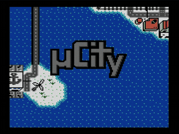
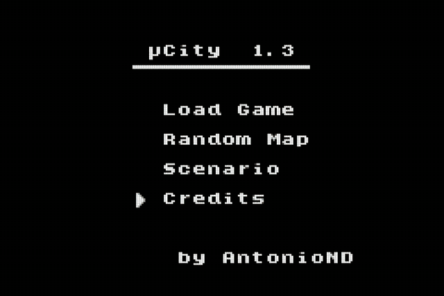
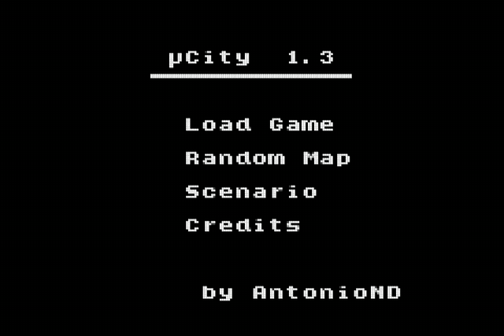
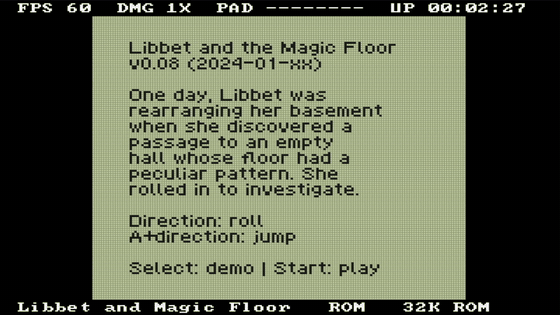
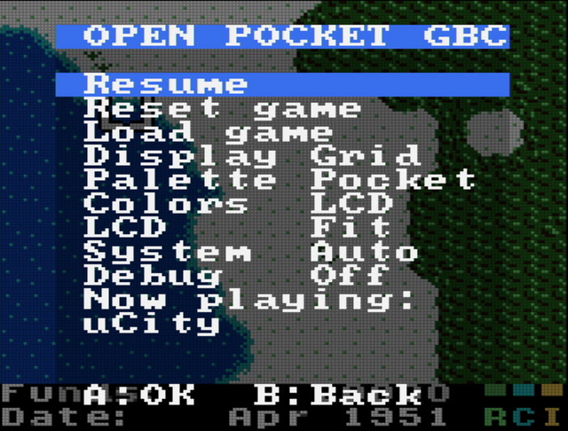
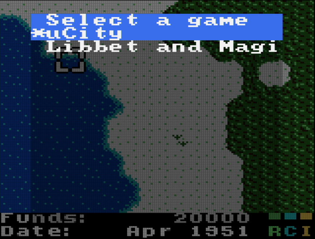
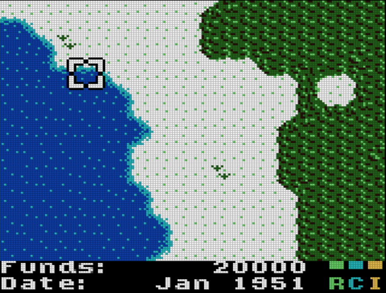
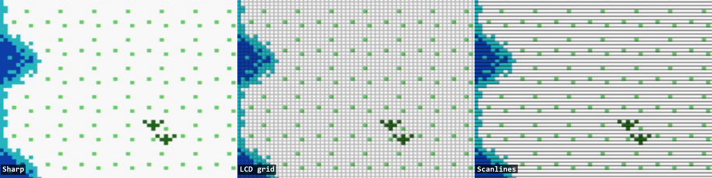
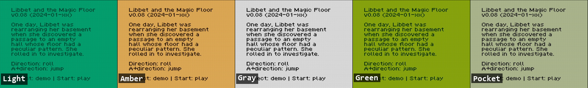
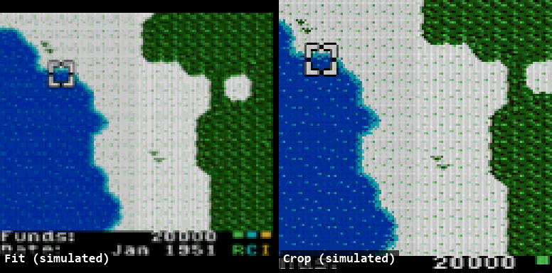
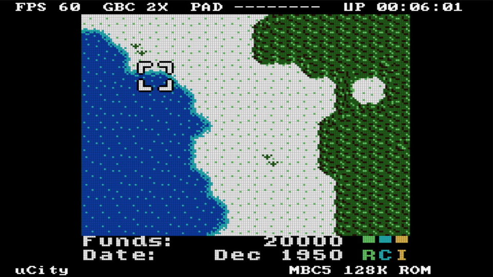
Everything connects to the header pins. Each button goes from its pin to GND; the FPGA's internal pull-ups are enabled. The LCD runs on 3.3 V.
| Button | Pin | Button | Pin |
|---|---|---|---|
| Up | 25 | A | 29 |
| Down | 26 | B | 30 |
| Left | 27 | Select | 31 |
| Right | 28 | Start | 77 |
| Menu | S1 | Reset game | S2 |
| ST7735 LCD | Pin | Other | Pin |
|---|---|---|---|
| SCL / SCK | 73 | DualShock 2 | 17–20 |
| SDA / MOSI | 74 | HDMI | on board |
| RES | 71 | USB remote | USB-C |
| DC / A0 | 72 | VCC | 3V3 |
| CS · BL | 53 · 52 | GND | GND |
In the menu: ↑↓ move the cursor, ←→ change a value, A selects, B goes back. Open the menu with Select+Start or board button S1.
An open-source flow from source to bitstream. The VHDL parts of the core (CPU, APU) are converted with GHDL; everything else goes through yosys-slang.
# build the bitstream (~8 min) ./build.sh gbc_top # write it to the SPI flash ./flash.sh flash # pack games and write them at 0x200000 python tools/make_games.py build/games.bin \ games/ucity.gbc=uCity games/libbet.gb ./flash.sh games
# play from the PC keyboard over USB python tools/remote.py # or script button presses python tools/remote.py "M . D D A . D A" # record a GIF from an HDMI capture card python tools/record.py demo.gif \ "M . D D D . R . R . A" --secs 10
The detailed guides live in the repository.
Toolchain, USB driver, build switches, game image format.
Pin map, LCD module parameters, controllers.
Every menu item and the debug overlay fields.
UART protocol, scripting, recording demos.
Clocks, SDRAM, framebuffer, video, notes on the open flow.
Описание проекта на русском языке.